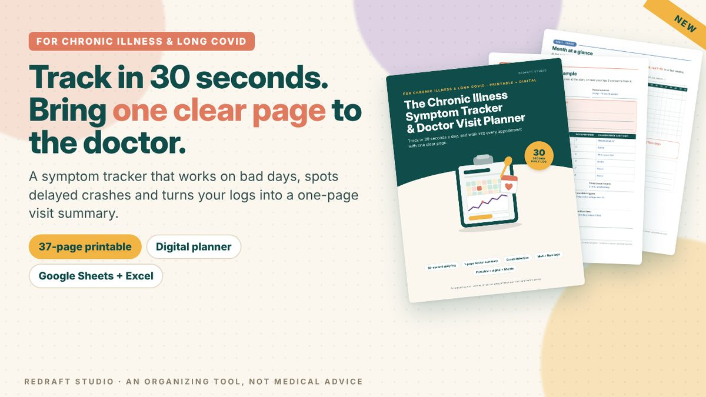
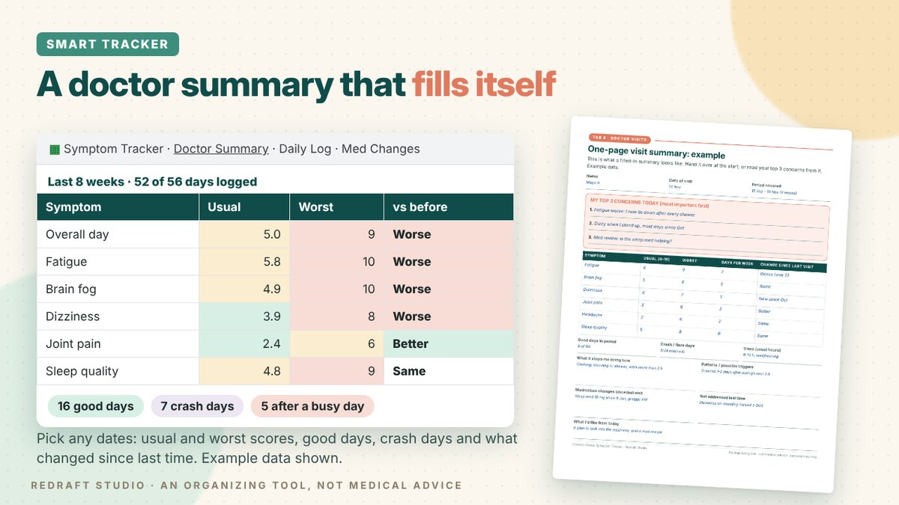
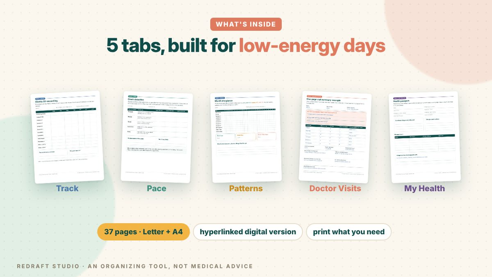
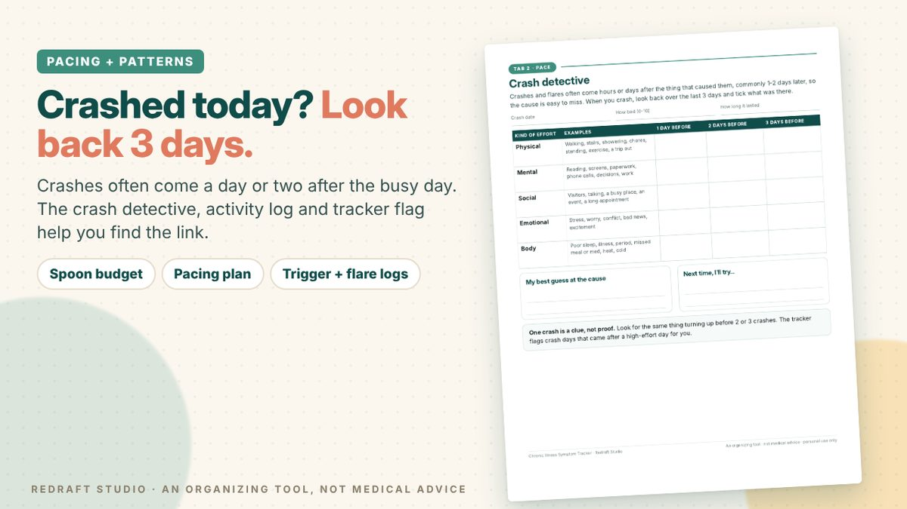
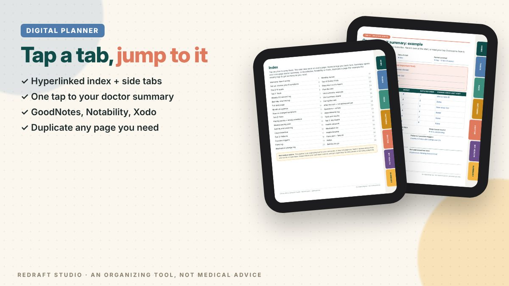
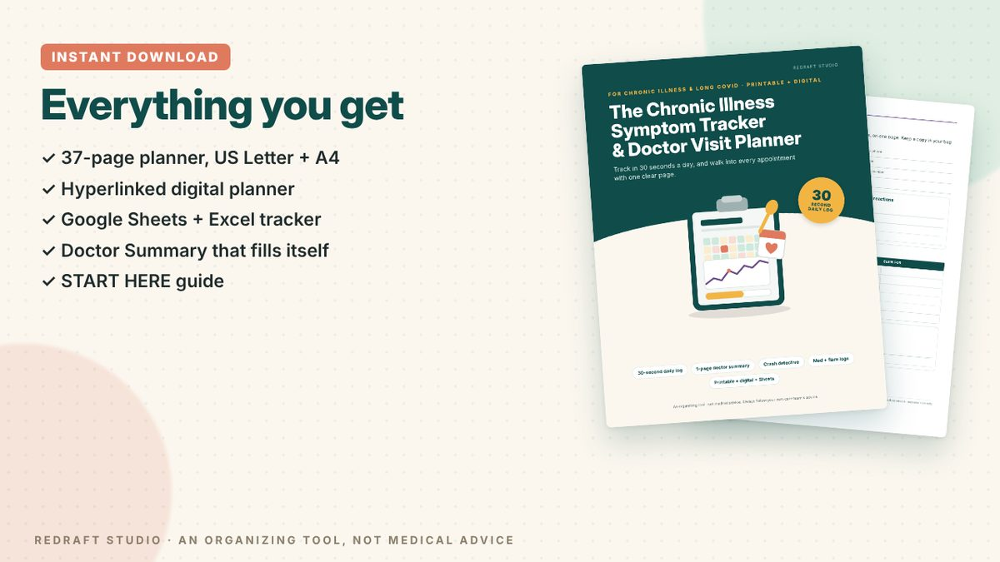

Chronic Illness Symptom Tracker & Doctor Visit Planner
Log symptoms in 30 seconds and hand your doctor a one-page summary.
Instant download. Pay once, print as often as you like.

Track in 30 seconds a day. Walk into every appointment with one clear page.
Most symptom trackers ask the most of you on the days you have the least to give, and then leave you with months of notes you can't sum up in a 10-minute appointment. This one is built the other way round: log less, see more, and bring one clear page to the doctor.
What makes it different
- Logging that fits bad days. 10 seconds on a bad day (one number, one word), 30 seconds most days, a full page only when you have the energy. Gaps are fine.
- A one-page doctor visit summary. Your top 3 concerns first, then usual and worst scores, good days, crash days, what changed and what wasn't addressed last time. A filled-in example shows you how.
- A summary that fills itself. In the Google Sheets / Excel tracker, pick any dates and the Doctor Summary tab works out averages, worst days, crash days and the change since the period before.
- Crash detective. Crashes often come a day or two after the busy day. Look back 3 days at physical, mental, social and emotional effort. The tracker flags crashes that followed a high-effort day.
- Describe it so it's heard. Swap vague words for what a symptom stops you doing, plus a 0-10 scale anchored to function, and calm scripts for when a concern gets brushed off.
- Meds that make sense. A list with what each medicine is for and who prescribed it, and a change log with your scores before and after.
- Printable, digital and spreadsheet. Print it, use it in GoodNotes or Notability with tappable tabs, or keep it on your phone in Google Sheets.
What's inside
37-page printable planner (US Letter + A4)
- Track: choose your 6 symptoms, the 0-10 scale by what you can do, weekly 30-second log, bad-day one-line log, full daily page, month at a glance, new or changed symptoms
- Pace: pacing basics + spoon budget, weekly pacing plan, activity and crash log, crash detective
- Patterns: possible triggers, flare log, medication and treatment change log, monthly review
- Doctor Visits: describe it so it's heard, plan the visit (prep + energy), one-page summary (example + blank), during-visit notes, after the visit + not addressed yet, questions and scripts, appointments log, tests and results
- My Health: health passport, medication list, health timeline, flare plan + flare kit
Hyperlinked digital planner (38 pages)
Tappable index and side tabs on every page, with a one-tap link to your doctor summary. Works in GoodNotes, Notability, Xodo and other PDF apps with a pen.
Google Sheets + Excel tracker (10 tabs)
Doctor Summary · Daily Log · My Symptoms · Medications · Med Changes · Flares · Appointments · Not Addressed · Tests. Example rows show every tab working; delete them when you start.
Built from what people said wasn't working
We read what people with chronic illness and long COVID say about symptom tracking. The common complaints: tracking is exhausting on bad days, diaries are impossible to sum up, the mind goes blank in short appointments, crashes come days after the cause, and concerns get brushed off and forgotten. This is the second, better draft.
FAQ
Is it for my condition?
You choose your own 6 symptoms, so it works for long COVID, ME/CFS, fibromyalgia, POTS, autoimmune conditions, chronic pain and anything still undiagnosed.
Do I need Google Sheets?
No. You also get an Excel file, a printable PDF and a digital planner. Google Sheets is free if you'd like the tracker on your phone.
Will this diagnose or treat anything?
No. It's an organizing tool for your own notes, not medical advice. It helps you bring clear information to your care team.
Can I print it more than once?
Yes. Print or duplicate as many pages as you need for your own use.
Made by Redraft Studio. Instant download. An organizing tool, not medical advice. Always follow your own care team's advice.





Not sure yet? Start with the free kit.
Free Doctor Visit Kit: a few pages from the same system, free to download and print.
Download the free kit